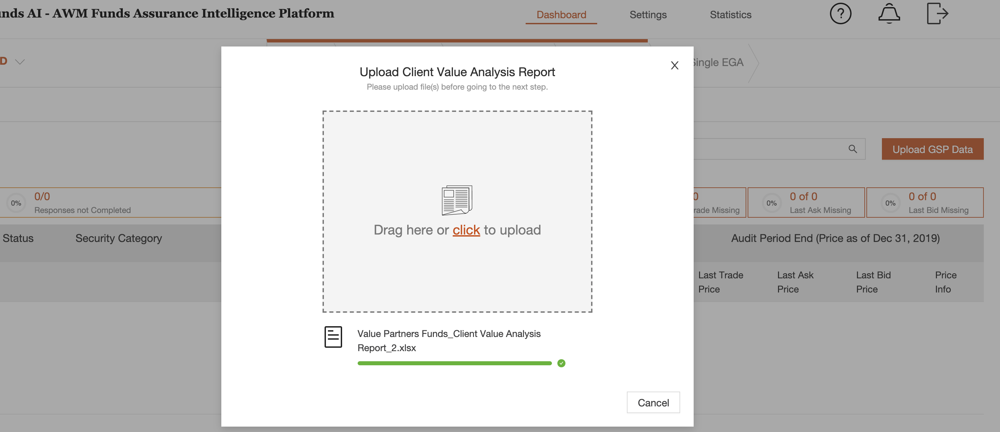
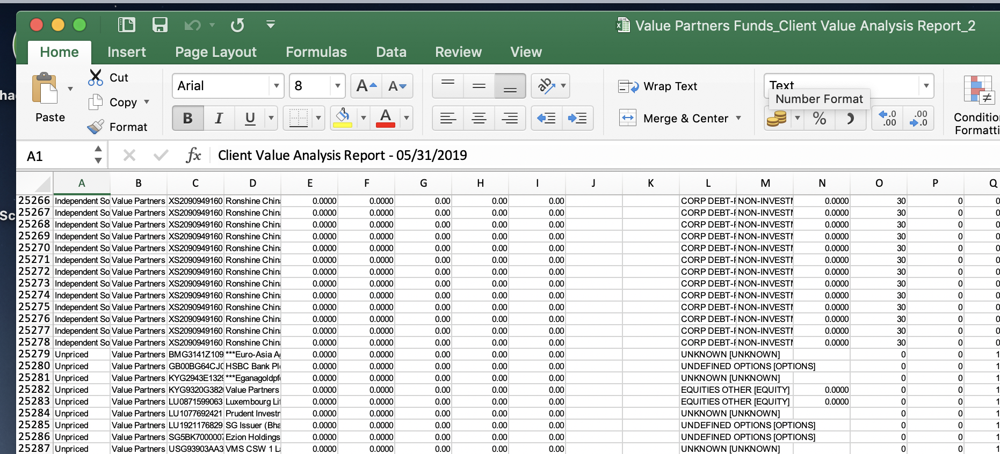
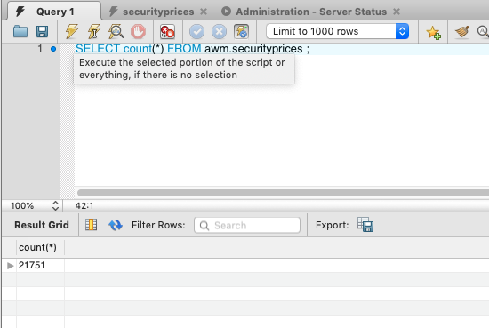
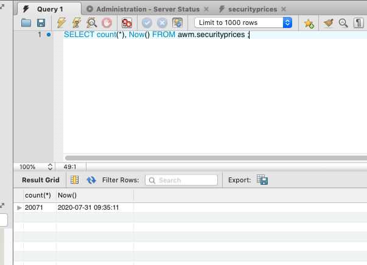
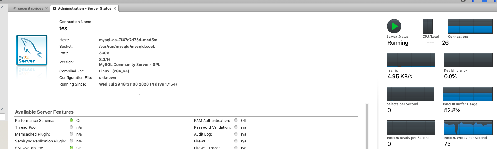
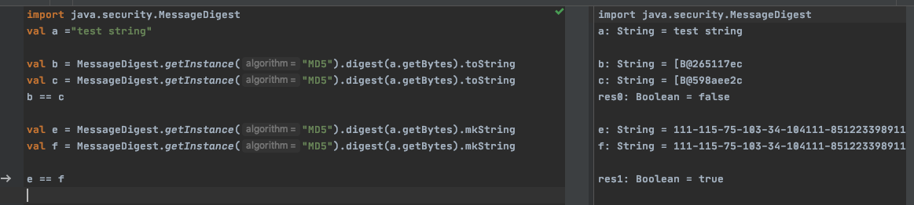

DB bulk insert
DB multiple insert issue
In AWM, there is a function for user to upload GSP data:

Then the backend will process these data, there are more than 20000 record in the excel:

But after backend processing finished, there are only 8451 records in the database:

when upload the same file after 8 times, the number goes to 21751:

Code for record in backend:
- Controller
-
source
def securityPriceFileRecord() = deadbolt.SubjectPresent()(parse.multipartFormData) { implicit request => { request.body.file("file").map { file => val excelResult = ExcelToArray.excelToArray(file.ref.toFile.getAbsolutePath) val priceSeqOpt = RecordToSecurityPrice.getInputExcel(excelResult) priceSeqOpt match { case Some(priceSeq) => Future(priceSeq.map { priceTemp => securityPriceWrite.recordSecurityPrice(priceTemp) }) Future(Ok(s"${priceSeqOpt.get.length} records recorded.")) case None => Future(BadRequest("This does not seem to be a GSP output file.")) } }.getOrElse(Future(BadRequest)) } } - Service
-
source
override def recordSecurityPrice(securityPrice: SecurityPrice): Future[Int] = { val queryItem = SecurityPriceQuery(getQueryItem(securityPrice.cname), getQueryItem(securityPrice.gsp), getQueryItem(securityPrice.isin), None, getQueryItem(securityPrice.pricetype), getQueryItem(securityPrice.source), getQueryItem(securityPrice.exchange), getQueryItem(securityPrice.currency), securityPrice.pricedate) securityPriceDAO.query(queryItem).flatMap { securityPriceSeq => securityPriceSeq.headOption match { case None => val newRecord = securityPrice.copy(id = UUID.randomUUID().toString) securityPriceDAO.create(newRecord) case Some(securityPriceOld) => val updateSecurity = securityPrice.copy(id = securityPriceOld.id) securityPriceDAO.update(updateSecurity) } } } - DB
-
source
override def create(securiryPrice: SecurityPrice): Future[Int] = { db.run( Securityprices += entityToRow(securiryPrice) ) } override def update(securityPrice: SecurityPrice): Future[Int] = { db.run( queryById(securityPrice.id).update(entityToRow(securityPrice)) ) }
From the service, it shows every item recording will cost 2 trips around with the database, and the database status will be :

Refine code with batch record:
- Controller
-
source
def securityPriceFileRecord() = deadbolt.SubjectPresent()(parse.multipartFormData) { implicit request => { request.body.file("file").map { file => val excelResult = ExcelToArray.excelToArray(file.ref.toFile.getAbsolutePath) val priceSeqOpt = RecordToSecurityPrice.getInputExcel(excelResult) priceSeqOpt match { case Some(priceSeq) => Future( securityPriceWrite.recordMultiple(priceSeq) ) Future(Ok(s"${priceSeqOpt.get.length} records recorded.")) case None => Future(BadRequest("This does not seem to be a GSP output file.")) } }.getOrElse(Future(BadRequest)) } } - Service
-
source
override def recordMultiple(securityPriceList: Seq[SecurityPrice]): Future[Seq[Int]] = { securityPriceDAO.recordMultiple(securityPriceList) } - DB
-
source
override def recordMultiple(securityPriceList:Seq[SecurityPrice])={ val seqRecord = securityPriceList.map(insertOrUpdate) db.run( DBIO.sequence(seqRecord)) } def insertOrUpdate(securityPrice: SecurityPrice)={ val recordOption= Securityprices.filter(_.cname ===securityPrice.cname) .filter(_.isin === securityPrice.isin) .filter(_.gsp === securityPrice.gsp) .filter(_.pricedate === securityPrice.pricedate) .filter(_.assetclass === securityPrice.assetclass) .filter(_.exchange ===securityPrice.exchange) .filter(_.source ===securityPrice.source) .filter(_.pricetype === securityPrice.pricetype) .filter(_.currency === securityPrice.currency).result.headOption for{ existing<-recordOption row = existing.map{price=>entityToRow(securityPrice).copy(id = price.id)}.getOrElse(entityToRow(securityPrice)) result <-Securityprices.insertOrUpdate(row) }yield result }
After the code change, all items are recorded:

Performance issue
The record function has some performance issue, each record insert will also have 2 trip around to database, here is using remote mysql server to compare performance: 
The refine db insert code as below:
- Not refined
-
source
override def recordMultiple(securityPriceList:Seq[SecurityPrice])={ val seqRecord = securityPriceList.map(insertOrUpdate) db.run( DBIO.sequence(seqRecord)) } def insertOrUpdate(securityPrice: SecurityPrice)={ val recordOption= Securityprices.filter(_.cname ===securityPrice.cname) .filter(_.isin === securityPrice.isin) .filter(_.gsp === securityPrice.gsp) .filter(_.pricedate === securityPrice.pricedate) .filter(_.assetclass === securityPrice.assetclass) .filter(_.exchange ===securityPrice.exchange) .filter(_.source ===securityPrice.source) .filter(_.pricetype === securityPrice.pricetype) .filter(_.currency === securityPrice.currency).result.headOption for{ existing<-recordOption row = existing.map{price=>entityToRow(securityPrice).copy(id = price.id)}.getOrElse(entityToRow(securityPrice)) result <-Securityprices.insertOrUpdate(row) }yield result } - Refined
-
source
private def getHashID(securityPrice: SecurityPrice):String={ val strToHash:String = securityPrice.gsp+ securityPrice.isin +securityPrice.pricetype + securityPrice.source+ securityPrice.exchange + securityPrice.pricedate + securityPrice.cname +securityPrice.currency +securityPrice.assetclass MessageDigest.getInstance("MD5").digest(strToHash.getBytes).map(0xFF & _).map { "%02x".format(_) }.foldLeft(""){_ + _} + securityPrice.pricedate + securityPrice.cname } override def recordMultiple(securityPriceList:Seq[SecurityPrice])={ val idChangedList = securityPriceList.map{ item=> val newID = getHashID(item) item.copy(id = newID) }.groupBy(_.id).map(_._2.head).toSeq val seqRecord = idChangedList.map(entityToRow) val ids = idChangedList.map(_.id) val idExisted= Await.result( db.run(Securityprices.filter(_.id.inSet(ids)).result).map(seq =>seq.map(_.id)) .map(seq=>seq.toSet), 3 seconds) println(idExisted) val newSecurity = seqRecord.filterNot(item=>idExisted.contains(item.id)) db.run(Securityprices++= newSecurity) }
After refined, with same configuration, the inserting performance as below: 
Md5 issue for compare

Questions
1.Why only 8451 items record in the first scenarios:
Because in first scenarios, all items for insert are running in separated DB request, There is some setting for db connection:
sourcemyapp = {
database = {
***
// The number of threads determines how many things you can *run* in parallel
// the number of connections determines you many things you can *keep in memory* at the same time
// on the database server.
// numThreads = (core_count (hyperthreading included))
numThreads = 10
// queueSize = ((core_count * 2) + effective_spindle_count)
// on a MBP 13, this is 2 cores * 2 (hyperthreading not included) + 1 hard disk
queueSize = 500
// https://blog.knoldus.com/2016/01/01/best-practices-for-using-slick-on-production/
// make larger than numThreads + queueSize
maxConnections = 20
connectionTimeout = 30000
validationTimeout = 30000
}
}
2.Why there is more than 20071 records in first scenarios when upload files multiple times:
Because the inserting are in the different threads to query if same item existed in db, then the insert operations will insert same record at same time in different threads.